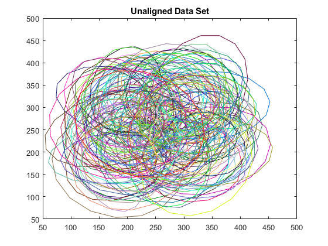
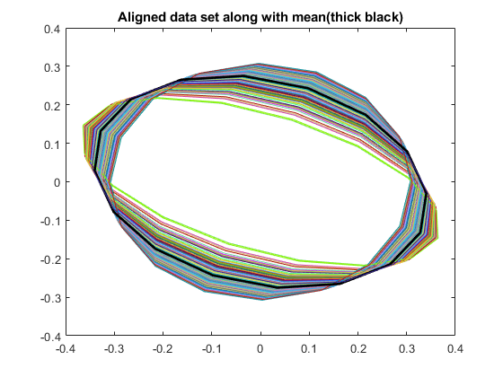
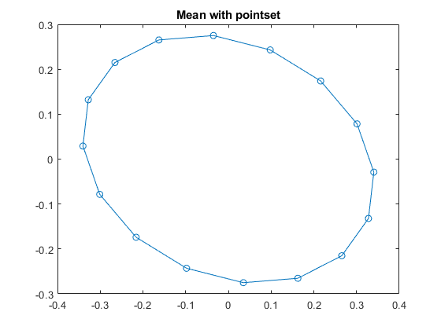
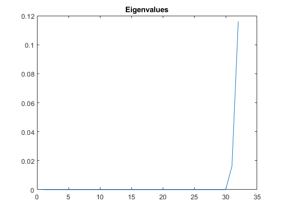
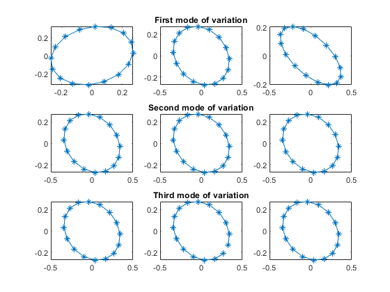
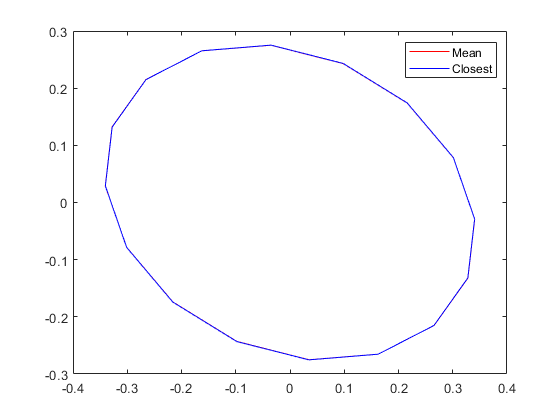
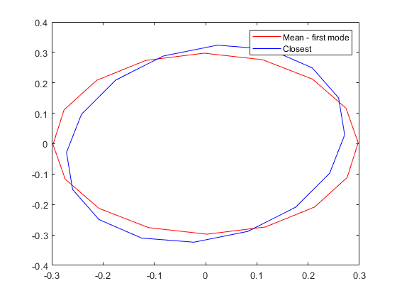
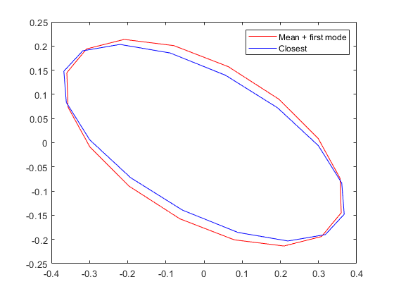

clc;
numfiles=150;
pts=0:16;
pts=pts*(pi/8);
shapes=zeros(2,16,150);
load('points.mat', 'shapes');
figure(1);
for i=1:150
pointsetplot=zeros(2,17);
pointsetplot(1,1:16)=shapes(1,1:16,i);
pointsetplot(1,17)=shapes(1,1,i);
pointsetplot(2,1:16)=shapes(2,1:16,i);
pointsetplot(2,17)=shapes(2,1,i);
plot(pointsetplot(1,:) , pointsetplot(2,:) , 'color' , [rand rand rand])
title('Unaligned Data Set')
hold on;
end
mean_ = mean_finder(shapes);
aligned_pt_set1 = zeros(2,16,150);
for i=1:150
pt_set1 = mean_;
pt_set2 = shapes(:,:,i)';
aligned_pt_set1(:,:,i) = align_pointset(pt_set1 , pt_set2)';
end
figure(2);
distance = zeros(150,1);
for i=1:150
mean_plot=zeros(17,2);
mean_plot(1:16,1)=mean_(1:16,1);
mean_plot(17,1)=mean_(1,1);
mean_plot(1:16,2)=mean_(1:16,2);
mean_plot(17,2)=mean_(1,2);
p = plot(mean_plot(:,1) , mean_plot(:,2) , 'color','black');
p(1).LineWidth = 2;
hold on;
aligned_pt_set1_plot=zeros(2,17);
aligned_pt_set1_plot(1,1:16)=aligned_pt_set1(1,1:16,i);
aligned_pt_set1_plot(1,17)=aligned_pt_set1(1,1,i);
aligned_pt_set1_plot(2,1:16)=aligned_pt_set1(2,1:16,i);
aligned_pt_set1_plot(2,17)=aligned_pt_set1(2,1,i);
plot(aligned_pt_set1_plot(1,:) , aligned_pt_set1_plot(2,:) , 'color' , [rand rand rand])
distance(i) = norm(aligned_pt_set1(:,:,i) - mean_');
end
title('Aligned data set along with mean(thick black)');
figure(3);
plot(mean_plot(:,1) , mean_plot(:,2),'-o')
title('Mean with pointset');
mean_flattened = reshape(mean_ , 16*2 , 1) ;
[eigen_vectors, eigen_values] = modes_finder(mean_flattened,mean_,shapes);
figure(4);
[vals,indexes]=sort(eigen_values);
plot(real(vals));
title('Eigenvalues');
a1=indexes(32);
a2=indexes(31);
a3=indexes(30);
prev_mode = mean_flattened - 3*eigen_values(a1)*eigen_vectors(:,a1);
next_mode = mean_flattened + 3*eigen_values(a1)*eigen_vectors(:,a1);
prev_mode = reshape(prev_mode , 16,2);
next_mode = reshape(next_mode , 16,2);
prev_mode = align_pointset(mean_,prev_mode);
next_mode = align_pointset(mean_,next_mode);
hold on;
figure(5);
subplot(3,3,2);
plot(mean_plot(:,1) , mean_plot(:,2),'-*');
title('First mode of variation')
prev_mode_plot=zeros(17,2);
prev_mode_plot(1:16,1)=prev_mode(1:16,1);
prev_mode_plot(17,1)=prev_mode(1,1);
prev_mode_plot(1:16,2)=prev_mode(1:16,2);
prev_mode_plot(17,2)=prev_mode(1,2);
subplot(3,3,1);
plot(prev_mode_plot(:,1),prev_mode_plot(:,2),'-*');
next_mode_plot=zeros(17,2);
next_mode_plot(1:16,1)=next_mode(1:16,1);
next_mode_plot(17,1)=next_mode(1,1);
next_mode_plot(1:16,2)=next_mode(1:16,2);
next_mode_plot(17,2)=next_mode(1,2);
subplot(3,3,3);
plot(next_mode_plot(:,1),next_mode_plot(:,2) , '-*');
prev_mode_2 = mean_flattened - 3*eigen_values(a2)*eigen_vectors(:,a2);
next_mode_2 = mean_flattened + 3*eigen_values(a2)*eigen_vectors(:,a2);
prev_mode_2 = reshape(prev_mode_2 , 16,2);
next_mode_2 = reshape(next_mode_2 , 16,2);
prev_mode_2 = align_pointset(mean_,prev_mode_2);
next_mode_2 = align_pointset(mean_,next_mode_2);
subplot(3,3,5);
plot(mean_plot(:,1) , mean_plot(:,2),'-*');
title('Second mode of variation');
prev_mode2_plot=zeros(17,2);
prev_mode2_plot(1:16,1)=prev_mode_2(1:16,1);
prev_mode2_plot(17,1)=prev_mode_2(1,1);
prev_mode2_plot(1:16,2)=prev_mode_2(1:16,2);
prev_mode2_plot(17,2)=prev_mode_2(1,2);
subplot(3,3,4);
plot(prev_mode2_plot(:,1),prev_mode2_plot(:,2),'-*');
next_mode2_plot=zeros(17,2);
next_mode2_plot(1:16,1)=next_mode_2(1:16,1);
next_mode2_plot(17,1)=next_mode_2(1,1);
next_mode2_plot(1:16,2)=next_mode_2(1:16,2);
next_mode2_plot(17,2)=next_mode_2(1,2);
subplot(3,3,6);
plot(next_mode2_plot(:,1),next_mode2_plot(:,2),'-*');
prev_mode_3 = mean_flattened - 3*real(eigen_values(a3))*eigen_vectors(:,a3);
next_mode_3 = mean_flattened + 3*real(eigen_values(a3))*eigen_vectors(:,a3);
prev_mode_3 = reshape(prev_mode_3 , 16,2);
next_mode_3 = reshape(next_mode_3 , 16,2);
prev_mode_3 = align_pointset(mean_,prev_mode_3);
next_mode_3 = align_pointset(mean_,next_mode_3);
subplot(3,3,8);
plot(mean_(:,1) , mean_(:,2),'-*');
title('Third mode of variation');
prev_mode3_plot=zeros(17,2);
prev_mode3_plot(1:16,1)=prev_mode_3(1:16,1);
prev_mode3_plot(17,1)=prev_mode_3(1,1);
prev_mode3_plot(1:16,2)=prev_mode_3(1:16,2);
prev_mode3_plot(17,2)=prev_mode_3(1,2);
subplot(3,3,7);
plot(prev_mode3_plot(:,1),prev_mode3_plot(:,2),'-*');
next_mode3_plot=zeros(17,2);
next_mode3_plot(1:16,1)=next_mode_3(1:16,1);
next_mode3_plot(17,1)=next_mode_3(1,1);
next_mode3_plot(1:16,2)=next_mode_3(1:16,2);
next_mode3_plot(17,2)=next_mode_3(1,2);
subplot(3,3,9);
plot(next_mode3_plot(:,1),next_mode3_plot(:,2),'-*');
figure(8);
[M,I] = min(distance);
pointsetplot=zeros(2,17);
pointsetplot(1,1:16)=aligned_pt_set1(1,1:16,I);
pointsetplot(1,17)=aligned_pt_set1(1,1,I);
pointsetplot(2,1:16)=aligned_pt_set1(2,1:16,I);
pointsetplot(2,17)=aligned_pt_set1(2,1,I);
plot(mean_plot(:,1),mean_plot(:,2),'color','red')
hold on;
plot(pointsetplot(1,:) , pointsetplot(2,:),'color','blue')
legend('Mean','Closest')
distance2 = zeros(150,1);
distance3 = zeros(150,1);
for i=1:150
distance2(i) = norm(prev_mode - align_pointset(prev_mode,shapes(:,:,i)'));
distance3(i) = norm(next_mode - align_pointset(next_mode , shapes(:,:,i)'));
end
[M2 , i2] = min(distance2);
[M3 , i3] = min(distance3);
i3
figure(9);
A = align_pointset(prev_mode,shapes(:,:,i2)');
B = align_pointset(next_mode , shapes(:,:,i3)');
pointsetplot=zeros(2,17);
pointsetplot(1,1:16)=A(1:16,1);
pointsetplot(1,17)=A(1,1);
pointsetplot(2,1:16)=A(1:16,2);
pointsetplot(2,17)=A(1,2);
plot(pointsetplot(1,:) , pointsetplot(2,:),'color','red');
hold on;
plot(prev_mode_plot(:,1),prev_mode_plot(:,2),'color','blue');
legend('Mean - first mode','Closest ')
figure(10);
pointsetplot=zeros(2,17);
pointsetplot(1,1:16)=B(1:16,1);
pointsetplot(1,17)=B(1,1);
pointsetplot(2,1:16)=B(1:16,2);
pointsetplot(2,17)=B(1,2);
plot(pointsetplot(1,:) , pointsetplot(2,:),'color','red');
hold on;
plot(next_mode_plot(:,1) , next_mode_plot(:,2),'color','blue');
legend('Mean + first mode','Closest');
1.3788e+03
4.7705e-05
4.2704e-07
3.8229e-09
3.4223e-11
ans =
32 32
ans =
32 32
i3 =
48
       